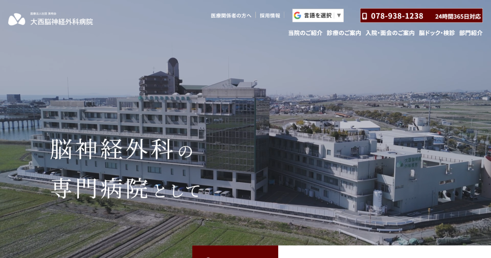
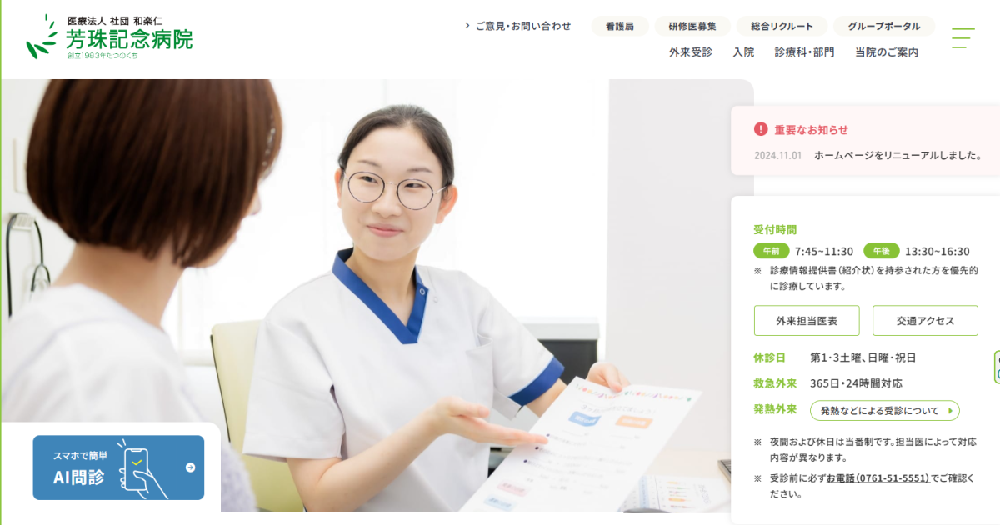

仕事に対する理念
課題を把握し、構造を整えることで成果を最大化します。目標達成に向けて、問題解決と改善提案を積極的に行います。
依頼者のビジョンとユーザーのニーズを理解し、適切な情報設計を行うことで、使いやすく成果を出すウェブサイトの実現を目指します。
実績紹介
大西脳神経外科病院｜病院サイトリニューアル
| 案件名 | 大西脳神経外科病院サイトリニューアル |
|---|---|
| 目的 | 治療方針や設備の魅力を訴求し、患者の信頼向上と集患を目指す |
| 課題 | 古いサイトデザインで情報が探しにくく、回遊率が低かった |
| 改善策 | 情報構造を再設計し、動画を活用した訴求と導線の明確化を実施 |
| 担当範囲 | 要件定義、情報設計、デザイン監修、進行管理 |
| 成果 | サイトリニューアル後、問い合わせ件数が1.5倍に増加 |
芳珠記念病院｜病院サイトリニューアル
| 案件名 | 芳珠記念病院サイトリニューアル |
|---|---|
| 目的 | 患者へのサービス案内の拡充と地域医療連携の促進 |
| 課題 | 情報量が多く、重要な情報が埋もれてしまっていた |
| 改善策 | トップページに重要情報をまとめ、ユーザー導線を改善 |
| 担当範囲 | 情報設計、デザインディレクション、進行管理 |
| 成果 | サイトリニューアル後、閲覧ページ数が約2倍に増加 |
麻生総合病院｜医師募集LP

| 案件名 | 麻生総合病院 医師採用LP制作 |
|---|---|
| 目的 | 医師の採用促進と病院の魅力訴求 |
| 課題 | 採用情報の不足と競合との差別化ができていなかった |
| 改善策 | 魅力ポイントを整理し、ストーリー性のあるページ構成を設計 |
| 担当範囲 | コンテンツ企画、情報設計、進行管理 |
| 成果 | 公開後、応募者数が30%以上増加 |
NPO法人gift｜団体サイト制作

| 案件名 | NPO法人 GIFT サイト制作 |
|---|---|
| 目的 | 団体の活動紹介と寄付促進 |
| 課題 | 活動内容やビジョンが十分に伝わっていなかった |
| 改善策 | 写真や動画を活用し、わかりやすく魅力的な情報発信を行う |
| 担当範囲 | サイト設計、コンテンツ企画、進行管理 |
| 成果 | サイト公開後、寄付申し込みが増加し、イベント参加者も増えた |